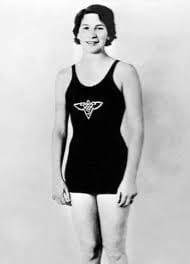
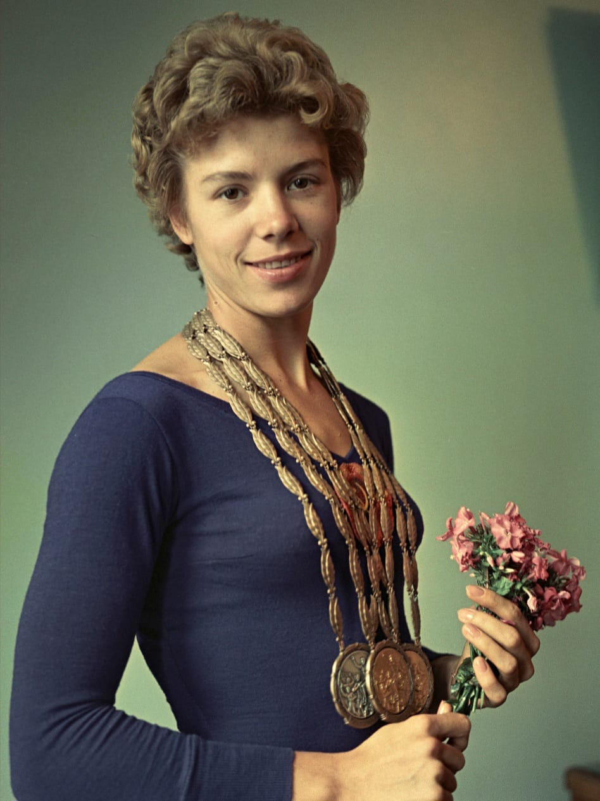
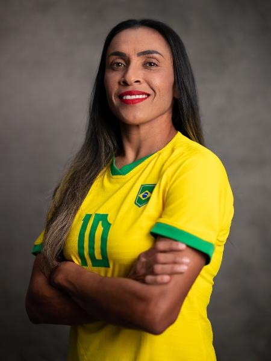

Mulheres importantes

Maria Lenk Secco
Foi uma nadadora brasileira pioneira e uma das maiores atletas da natação do país. Ela nasceu em 15 de janeiro de 1915, no Rio de Janeiro, e faleceu em 16 de abril de 2007, aos 92 anos. Maria Lenk foi a primeira mulher sul-americana a competir nos Jogos Olímpicos, representando o Brasil nos Jogos de Los Angeles, em 1932. Ela também foi a primeira nadadora brasileira a estabelecer recordes mundiais, conquistando esse feito em 1939 nos 200 metros peito e nos 200 metros medley. Maria Lenk é considerada uma verdadeira lenda da natação brasileira e seu legado continua vivo até hoje. Sua determinação, talento e pioneirismo abriram caminho para futuras gerações de nadadores brasileiros.

Aída Dos Santos
A brasileira Aída dos Santos foi a única mulher da delegação nos Jogos de Tóquio 1964. A atleta conquistou o inédito quarto lugar no salto em altura, ainda que tenha ido sem uniforme, tênis ou técnico. Infelizmente, por ter feito críticas ao Comitê Olímpico, Aída foi cortada da seleção perto do início dos Jogos de 1972.
Larisa Semyonovna Latynina
Uma ex-ginasta soviética nascida na Ucrânia participou de três Jogos Olímpicos representando a antiga União Soviética, conquistando um total de dezoito medalhas, sendo nove de ouro, que a tornaram a maior medalhista olímpica de todos os tempos por décadas. Apenas em 2012, o nadador norte-americano Michael Phelps superou sua marca No total das três edições de que participou em campeonatos mundiais, Larisa é tetracampeã por equipes e bicampeã do concurso geral, além de campeã no solo, na trave, no salto e nas barras assimétricas. Em 1966, se aposentou e tornou-se técnica da equipe nacional de ginástica da União Soviética até 1977 e organizou a competição de ginástica dos Jogos Olímpicos de Moscou, em 1980.

Enriqueta Basilio
Já a participação de Enriqueta Basilio teve uma importância diferente das demais atletas. Isso porque a velocista mexicana foi a primeira das mulheres na Olimpíada a acender a pira. Esse momento histórico e de grande importância aconteceu na abertura dos Jogos do México, em 1968.

Marta Vieira da Silva
Já foi escolhida como melhor futebolista do mundo por seis vezes, sendo cinco de forma consecutiva. Um recorde não apenas entre mulheres mas também entre homens. Desde 2015 é a maior artilheira da história da Seleção Brasileira (contando a masculina e a feminina), com 119 gols. Durante a Copa de 2019, quando Brasil e Itália se encontram, Marta marca seu 17º gol, assim se torna a maior artilheira da Copa do Mundo de Futebol Feminino e também a pessoa com o maior número de gols em Copas do Mundo (entre homens e mulheres). Além disso, se torna a primeira pessoa a marcar gols em cinco edições de Copas do Mundo (considerando homens e mulheres).
